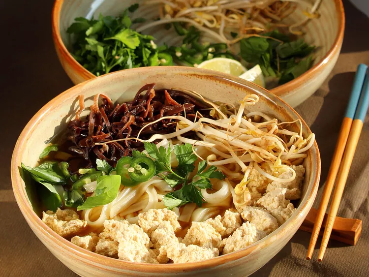

Home
Vietnamese Food
Vegetarian Pho (Vietnamese Noodle Soup)

Vegetarian pho noodles are a plant-based twist on the traditional
Vietnamese pho, a fragrant noodle soup known for its deeply flavorful
broth and aromatic herbs. Instead of using beef or chicken, vegetarian
pho is built on a rich vegetable broth simmered with ingredients like
charred onions, ginger, star anise, cloves, cinnamon, and sometimes
mushrooms or kombu for extra umami depth. This broth forms the soul of
the dish, infusing it with warmth and complexity while remaining
entirely meat-free. The noodles used are typically flat rice noodles,
which are light and slippery, soaking up the savory flavors of the broth
beautifully.
Toppings in vegetarian pho vary but often include tofu (either soft
or fried), bok choy, bean sprouts, scallions, Thai basil, cilantro,
lime wedges, and sometimes chili peppers or hoisin and sriracha
sauces for added heat and sweetness. The dish is both comforting
and customizable, appealing to a wide range of tastes and dietary
needs. Vegetarian pho is popular not just among vegetarians and
vegans, but also with anyone looking for a lighter, plant-based meal
that doesn’t sacrifice flavor or satisfaction. It’s a nourishing,
soul-soothing bowl perfect for any time of day.
Broth Ingredients:
- 10 cups vegetable stock
- 1 onion, peeled and halved
- ¼ cup soy sauce
- 8 cloves garlic, coarsely chopped
- 2 (3 inch) cinnamon sticks
- 2 teaspoons ground ginger
- 2 pods star anise
- 2 bay leaves
Soup Ingredients:
- 1 (16 ounce) package thin rice noodles (such as Thai Kitchen®)
- 2 tablespoons vegetable oil, or as needed
- 2 (14 ounce) packages firm tofu, drained and cut into 1/4-inch slices
- 8 ounces enoki mushrooms
- 4 scallions, thinly sliced
- ½ cup coarsely chopped cilantro
- 1 lime, cut into wedges
- 2 jalapeno peppers, sliced into rings
- ¼ cup mung bean sprouts
- ¼ cup Thai basil leaves, torn into bite-size pieces
Directions
- Place vegetable stock, onion, soy sauce, garlic, cinnamon sticks,
ground ginger, star anise, and bay leaves in a large pot; bring to
a boil. Reduce heat, cover, and simmer until flavors combine, 30 to
45 minutes. Remove solids with a slotted spoon and keep broth hot.
- Place noodles in a large bowl and cover with boiling water. Set
aside until noodles are softened, 8 to 10 minutes. Drain and rinse
thoroughly. Divide noodles among 6 serving bowls.
- Heat oil in a large skillet over medium-high heat until shimmering.
Add tofu in a single layer and fry, in batches, until golden brown,
about 6 minutes per side.
- Simmer fried tofu and mushrooms in broth until heated through,
about 5 minutes. Transfer to serving bowls. Top with scallions and
cilantro. Ladle in hot broth.
- Serve lime wedges, jalapeno peppers, bean sprouts, and basil
alongside for garnishing each bowl.